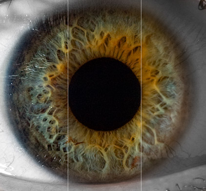

I’ve just finished my project for SoFoBoMo, and put live the new sofobomo.org site. SoFoBoMo, for those of you who don’t know, is the Solo Photo Book Month: a loosely organised international group of photographers who all decided to stop procrastinating and make a real, physical book. In one month.
You can see the finished results here.
Since this blog is supposed to be about technique, not just pimping my projects, I thought I’d share with you the process I used to make 41 portraits in 4 weeks.
Each of the 41 portraits is a macro shot of an eye, with a classical head and shoulders portrait of a the eye’s owner behind the pupil.
The project
When I look at a portrait I first see the expression on the subject’s face, and after a few moments of appreciation I find my gaze inevitably drawn to the eyes. The eyes reveal the personality of the subject, confirming the expression of the face or contradicting it. The eyes are the most important part of the portrait, yet the smallest. This is a pity because eyes contain beautiful details that are lost in most portraits.
This project consists of inside-out portraits. The intention is that after the first few moments regarding the eye, your gaze is inevitably drawn inwards to the subject’s face:

Yup, that’s natural colour. The colour and texture comes from using a strong flash from the side to illuminate the iris, removing all the reflections you’d see if you took the photo in a well lit room. Click through to the flickr page and have a look at the large size.
This is how the photos were taken:
The Macro shot
As a macro shot, the depth of field was very shallow. Normally I advise people not to close the aperture more than f/11 to prevent softness due to diffraction. I tried f/11 at first, but found that the focus errors this caused were a far worse problem than a bit of diffraction so I stopped down to f/22 to increase the depth of field. As always for macro photography, a still subject is important so I had my subjects lean into a chair back and rest their chin on their hands. My lens was a standard 70-300 zoom with a Canon 500D close-up attachment on the front which reduces the lens focussing distance allowing you to get close for a high magnification.
The eye is side-lit by a single flash. Normally this would produce a harsh light unsuitable for a portrait. However, for the macro shot this was exactly what I wanted. The light reveals all the texture in the skin and iris.

The main lesson I learned from the macro shot was that I got far better results by shooting a bit too much of each eye then cropping down. I left myself more room for error, increased the depth of field, and used my lens at 200mm where it is sharper than at 300mm.
Manually focussing with an f/5.6 lens in dim indoor lighting is hard, so I placed a bare lightbulb behind me and twisted the focus ring until the reflection of the bulb in the eye was a single pinprick of light. This would work for any shiny surface. Using a shutter speed of 1/250 and an f/22 aperture a bright flash is required, meaning that all illumination in the photo comes from the flash and the focussing bulb is not visible in the photo.
The portrait
The portraits were harder than the macro shot because I’m not a portrait photographer. With a bit of practice however, and a lot of wine, I found myself reassuring subjects and coaxing some good poses out of them.
The Flash was bounced into a silver umbrella which creates a soft light on the subject’s face that is much more flattering than a direct flash. The black curtain in the background means that you can’t see the join between the portrait and the black pupil in the macro shot when they are combined.

The main lesson I learned is that taking portraits takes practice. You’ll never get a good shot of someone who is nervous, and you can stop people from being nervous by being confident (and by serving wine). Before I started I didn’t feel comfortable taking photos of people. After 41 portraits I feel like I can get good shots of most (say 75%) of the people I meet.
Editing and post-production
Apart from the obvious changes of superimposing the portrait and and converting everything but the iris to black and white, the only processing I did was sharpening. The skin was treated to a Photoshop unsharp mask at strength 200% and radius 2px. This is a strong effect that looks too much on screen, but will be perfect for the printed work since printing softens the photo slightly. The inner portrait was sharpened with a radius of 1 pixel since 2px messed up the fine detail too much. Finally, the iris got a strength of 40% and a radius of 30px. This effect is completely different to standard sharpening, and has the effect of enhancing the patterns in the iris.
In this photo, the rightmost section has no treatment, the middle section has the 2 pixel sharpen, and the left section has the 30 pixel sharpen on top of the 2 pixel one:

Bernie,
Again a great experience sharing. I must say that most articles I’ve read about photography are not as clear as yours and don’t go in the technical side of photography which give this extra clarity.
Thanks for your contribution to making photography well understood.
Can’t wait for your next writing.